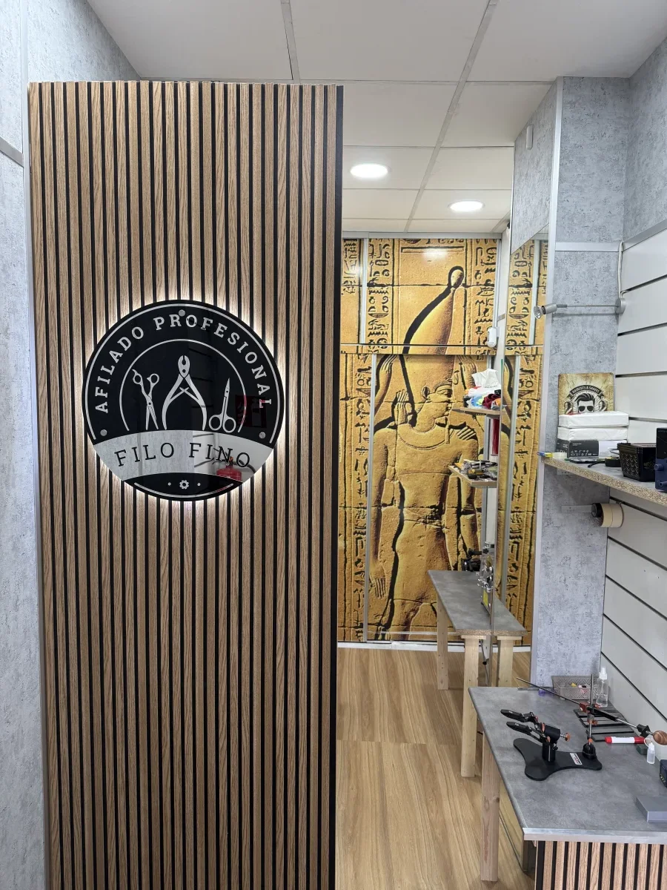
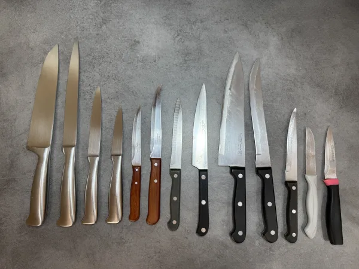
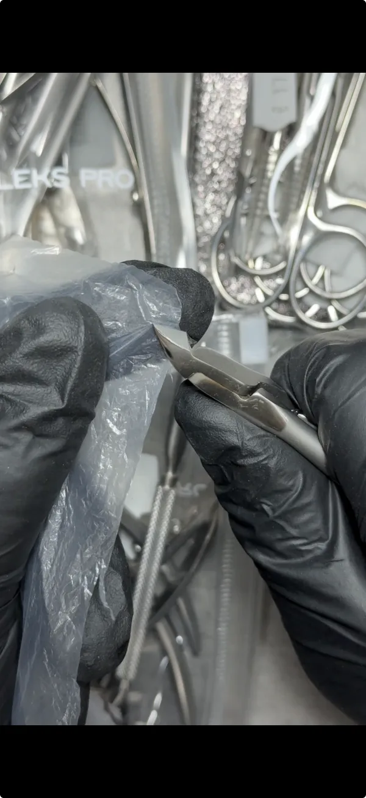
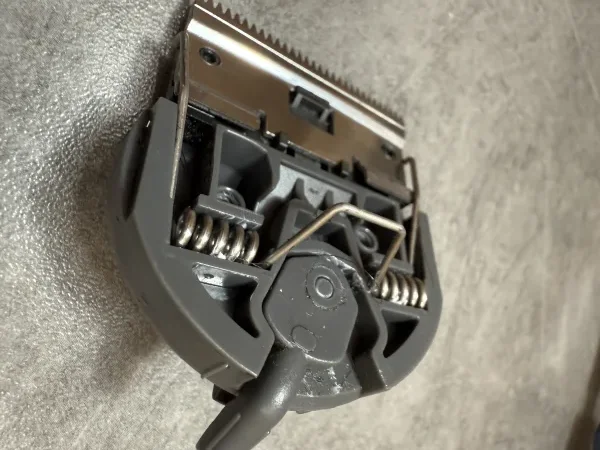
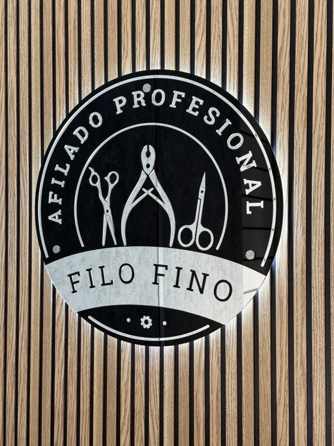

Tijeras de peluquería
Tijeras clásicas, de entresacar y otros modelos profesionales. Cuando tiran del pelo, cortan irregular o cansan la mano. Desde 17 € · listo en el día.
Ver servicio →Taller de afilado profesional en Valencia
Revisión real antes de afilar · Garantía 7 días · Taller local en Valencia.
Trabajo con herramientas domésticas y profesionales: tijeras de peluquería, cuchillos de cocina, manicura, cuchillas de máquina y reparación básica.
Revisión real antes de afilar. Sin trabajar de forma automática ni quitar material innecesario.
Para responderte rápido: envía foto, qué herramienta es (cuchillo/tijeras/manicura) y qué problema notas (aplasta/tira/muerde).
También atendemos llamadas. Muchos clientes prefieren WhatsApp: así queda por escrito y podemos orientarte con calma.

Filo Fino es un taller dedicado exclusivamente al afilado y ajuste de herramientas. Sin mostrador de venta: el foco es el servicio y el resultado.
Puedes venir directamente al taller — o escríbeme por WhatsApp para reservar tu momento y saber en cuánto tiempo estará lista.
Escríbeme por WhatsAppTrabajo con herramientas de uso doméstico y profesional. Si no sabes si tu caso tiene solución, puedes consultarlo por WhatsApp antes de venir.
Tijeras clásicas, de entresacar y otros modelos profesionales. Cuando tiran del pelo, cortan irregular o cansan la mano. Desde 17 € · listo en el día.
Ver servicio →
Cuchillos domésticos y de uso profesional. Ajuste del filo según el tipo de corte y el uso real de la herramienta. Desde 5 € · listos en 15 minutos.
Ver servicio →
Alicates, tijeras, pinzas y empujadores. Trabajo orientado a un corte limpio y controlado. Desde 5 € · listo en el día.
Ver servicio →
Afilado de cuchillas de máquinas profesionales con revisión previa. Trabajo sobre bloques reales para recuperar un corte limpio y preciso. Desde 13 € · listo en el día.
Ver servicio →Ejemplos reales antes y después, pruebas de corte y casos habituales que llegan al taller.
Ejemplo real de corte limpio después de la revisión y el ajuste.
Recuperación del corte según el uso del cuchillo y el estado del filo.
Ejemplo de trabajo orientado a un corte más preciso y limpio.
El proceso es claro: primero reviso, después valoro y solo entonces hago el trabajo necesario.
Recibo la herramienta en el taller o por envío, según el caso.
Compruebo desgaste, filo, daños previos, geometría y uso real.
Realizo afilado, ajuste o restauración según lo que realmente necesita.
Se revisa el resultado antes de entregar la herramienta lista para trabajar.
Muchos clientes no buscan “afilado” en general, sino solución a un problema concreto. Estos son algunos de los más frecuentes.
Suele indicar pérdida de filo, mal ajuste o problemas tras un afilado incorrecto.
Cuando aplasta, resbala o exige demasiada presión, el problema suele estar en el filo o en el ángulo.
No siempre basta con afilar: a veces hace falta revisar también el estado general de la herramienta.
Puede deberse al filo, al ajuste o al estado de las cuchillas y su mantenimiento.
A veces llegan herramientas ya trabajadas de forma incorrecta y requieren restauración, no solo afilado.
También hago valoración honesta para decir si compensa o no hacer el trabajo.
Opiniones reales de personas que han confiado sus herramientas al taller.
"Llevaba meses con las tijeras tirando del pelo. Las traje, las revisó y me explicó exactamente qué tenían. Volvieron a cortar como el primer día."
"Traje varios cuchillos de cocina y en menos de media hora los tenía listos. Revisó cada uno antes de tocarlos y me explicó el estado real de cada filo."
"Mis alicates desgarraban la cutícula desde hacía tiempo. Ahora cortan limpio y sin esfuerzo. Muy buena atención y precio razonable."
"Las tijeras Convex estaban arruinadas por un mal afilado anterior. Las restauró completamente: no solo las afiló, también las ajustó. Resultado perfecto."

En Filo Fino me dedico al afilado profesional y la restauración de herramientas de trabajo: tijeras de peluquería, instrumentos de manicura y cuchillos de cocina.
Mi enfoque no es automático ni genérico. Cada herramienta la reviso individualmente para entender su estado real, su geometría y la función para la que se utiliza. Un afilado correcto no solo devuelve el filo, sino que permite trabajar mejor, con menos esfuerzo y mayor control.
Con frecuencia recibo herramientas que han sido afiladas de forma incorrecta: geometría alterada, material retirado en exceso o ángulos inadecuados. En estos casos, el trabajo consiste en restaurar el instrumento, no simplemente volver a afilarlo.
Trabajo en mi taller en Valencia, atendiendo también a clientes de Torrent, Paterna, Burjassot y otras zonas cercanas, así como envíos desde toda España.
Precios orientativos para afilado, ajuste y mantenimiento. Cada herramienta se revisa antes de confirmar el trabajo, especialmente si presenta desgaste, daños previos o señales de un afilado incorrecto.
Artículos útiles para entender por qué una herramienta deja de funcionar bien y cuándo conviene afilar, ajustar o restaurar.